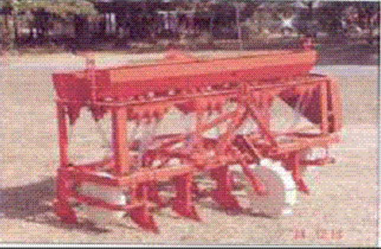

5.0 बुवाई और उर्वरक आवेदन उपकरण
- 5.1 उर्वरक प्रसारक
- 5.2 बीज-सह-उर्वरक ड्रिल
- 5.3 जीरो-टिल ड्रिल
- 5.4 स्ट्रिप-टिल ड्रिल
5.1 उर्वरक प्रसारणकर्ता

विशेषताएं
इस उपकरण का उपयोग दानेदार खाद और फसल के छोटे बीजों के प्रसारण के लिए भी किया जाता है। उपकरण हाथ से संचालित होने के साथ-साथ ट्रैक्टर संचालित संस्करण में भी उपलब्ध है। हाथ से चलने वाले ब्रॉडकास्टर को इसके साथ प्रदान की गई कंधे की पट्टियों की मदद से ऑपरेटर के सामने रखा जाता है और इसे एक हैंडल की मदद से संचालित किया जा सकता है। ट्रैक्टर संचालित संस्करण रियर माउंटेड है और इसके पीटीओ द्वारा संचालित है। ब्रॉडकास्टर, दोनों संस्करणों में मुख्य रूप से एक हॉपर और एक स्पिनिंग डिस्क होता है। हॉपर से बीज या उर्वरक को तेज गति से घूमते हुए कताई डिस्क पर गिराया जाता है, जो बदले में केंद्रापसारक बल के कारण बीज/उर्वरक को समान रूप से चारों ओर फैला देता है। कताई डिस्क में सामग्री का प्रवाह शटर प्लेट द्वारा नियंत्रित किया जा सकता है.
विशेष विवरण:
ट्रैक्टर संचालित
| पावर सोर्स ट्रैक्टर | : 5एचपी/26.5 किलोवाट |
| हूपर क्षमता | : 300 किग्रा |
| मशीन का वजन | : 180 सेमी |
| कवर किया गया क्षेत्र | : 2.50 हेक्टेयर/घंटा |
मैन्युअल रूप से संचालित
| एक व्यक्ति | |
| हूपर क्षमता | : 10 किलो |
| वज़न | : 4 किलो |
| कुल मिलाकर आयाम (लंबाई, चौड़ाई और
ऊंचाई) = 41 सेमी, 38.5 सेमी और 41 सेमी. |
|
| कवर किया गया क्षेत्र | : 1.0 हेक्टेयर/घंटा |
उपयोग:
इसका उपयोग आवश्यक दर के अनुसार दानेदार उर्वरक और बीजों को समान रूप से खेत में प्रसारित करने के लिए किया जाता है।
मशीन की लागत: 12000 रुपये (ट्रैक्टर संचालित) और 2500/- रुपये (मैनुअल .))
5.2 बीज-सह-उर्वरक ड्रिल

विशेषताएं
सीड कम फर्टिलाइजर ड्रिल में सीड बॉक्स, फर्टिलाइजर बॉक्स, सीड और फर्टिलाइजर मीटरिंग मैकेनिज्म, सीड ट्यूब, फरो ओपनर्स, सीड और फर्टिलाइजर रेट एडजस्टिंग लीवर और ट्रांसपोर्ट कम पावर ट्रांसमिटिंग व्हील शामिल हैं। फ्लुटेड रोलर्स एक शाफ्ट द्वारा संचालित होते हैं जो पहियों से शक्ति प्राप्त करते हैं। सीड बॉक्स में लगाए गए फ़्लूटेड रोलर्स, बीजों को अनुदैर्ध्य खांचे में प्राप्त करते हैं और उन्हें फ़रो ओपनर्स से जुड़ी सीड ट्यूब में छोड़ देते हैं। रोलर्स को बग़ल में स्थानांतरित करके, बीज के संपर्क में आने वाले खांचे की लंबाई को बढ़ाया या घटाया जा सकता है और इसलिए बोए गए बीज की मात्रा भिन्न हो सकती है।
विशेष विवरण:
| लंबाई (मिमी) | : 1940-2310 |
| चौड़ाई (मिमी) | : 970-1560 |
| ऊंचाई (मिमी) | : 1070-1350 |
| बीज पैमाइश तंत्र | : फ्लुटेड रोलर |
| उर्वरक पैमाइश तंत्र | : आंदोलनकारी के साथ गुरुत्वाकर्षण फ़ीड |
| फ़रो ओपनर की संख्या | : 9-13 |
| फ़रो ओपनर | : प्रतिवर्ती फावड़ा |
| फ़ीड शाफ्ट का आकार (मिमी) | : 16-19 |
| आकार (व्यास) और बांसुरी की संख्या | : 42.7-49.2 and 9-11 |
| बीज बॉक्स क्षमता (cm3) | : 66241-10308 |
| उर्वरक बॉक्स क्षमता (सेमी 3) | : 63310-10141 |
| वजन (किग्रा) | : 224-328 |
| शक्ति स्रोत (एचपी/किलोवाट) | : 35/26.25, ट्रैक्टर |
उपयोग:
तैयार खेत में गेहूं और अन्य अनाज की फसलों की बुवाई के लिए बीज सह उर्वरक ड्रिल का उपयोग किया जाता है
मशीन की लागत : रु.35,000/-
5.3 जीरो-टिल ड्रिल
विशेषताएं
जीरो-टिल-ड्रिल में फ्रेम, सीड बॉक्स, फर्टिलाइजर बॉक्स, सीड मीटरिंग मैकेनिज्म, फर्टिलाइजर मीटरिंग मैकेनिज्म ', सीड ट्यूब, फरो ओपनर सीड/फर्टिलाइजर एडजस्टिंग मैकेनिज्म और ट्रांसपोर्ट कम पावर ट्रांसमिटिंग व्हील शामिल हैं। फ्रेम माइल्ड स्टील बॉक्स सेक्शन से बनाया गया है। अनंत पंक्ति रिक्ति प्राप्त करने के लिए, क्लैम्प की मदद से टाइन को माउंट किया जाता है। जीरो-टिल ड्रिल और पारंपरिक ड्रिल के बीच मुख्य अंतर यह है कि इसमें रिवर्सिबल फावड़े टाइप फ्यूरो ओपनर्स के बजाय टाइन पर फिक्स इनवर्टेड टी-टाइप फ्यूरो ओपनर है। उल्टे टी-टाइप फ़रो ओपनर्स का मुख्य लाभ क्लॉड्स का न बनना, कम ड्राफ्ट की आवश्यकता और मिट्टी में आसान पैठ है।
विशेष विवरण:
| लंबाई (मिमी) | : 1940-2310 |
| चौड़ाई (मिमी) | : 970-1560 |
| ऊंचाई (मिमी) | : 1070-1350 |
| बीज पैमाइश तंत्र | : फ्लुटेड रोलर |
| उर्वरक पैमाइश तंत्र | : आंदोलनकारी के साथ समायोज्य उद्घाटन |
| विद्युत पारेषण | : चेन और स्प्रोकेट |
| फ़रो ओपनर | : उलटा टी-प्रकार |
| फ़रो ओपनर की संख्या | : 9-13 |
| उर्वरक शाफ्ट का आकार (मिमी) | : 20-22.3 |
| बीज बॉक्स क्षमता (सेमी 3) | : 66241-10308 |
| उर्वरक बॉक्स क्षमता (सेमी 3) | : 63310-10141 |
| वजन (किग्रा)) | : 150- 220 |
| शक्ति स्रोत (एचपी/किलोवाट) | : 35/26.25, ट्रैक्टर |
उपयोग:
धान की कटाई के बाद बिना तैयारी के खेत में गेहूं की फसल बोने के लिए जीरो टिल ड्रिल का प्रयोग किया जाता है। इससे 2000-3000 रुपये प्रति हेक्टेयर, 20-30 समय और श्रम की बचत होती है। यह एक पूर्व-सिंचाई भी बचाता है।
मशीन की लागत : रु.35,000/-
5.4 स्ट्रिप-टिल ड्रिल

Features
स्ट्रिप-ड्रिल में एक मानक सीड ड्रिल होता है जिसमें सामने की ओर एक रोटरी अटैचमेंट लगा होता है। रोटरी सिस्टम में सी-टाइप ब्लेड होते हैं, जो प्रत्येक फ़रो ओपनर के सामने 75 मिमी चौड़ी पट्टी तैयार करते हैं। इस प्रकार प्रत्येक पंक्ति के साथ, 125 मिमी पट्टी को बिना जुताई के छोड़ दिया जाता है और केवल 40 प्रतिशत क्षेत्र की जुताई की जाती है। जुताई और बुवाई एक साथ की जाती है।
विशेष विवरण:
| लंबाई (मिमी) | : 1940-2310 |
| चौड़ाई (मिमी) | : 970-1560 |
| ऊंचाई (मिमी) | : 1070-1350 |
| बीज पैमाइश तंत्र | : फ्लुटेड रोलर |
| उर्वरक पैमाइश तंत्र | : आंदोलनकारी के साथ गुरुत्वाकर्षण फ़ीड |
| विद्युत पारेषण | : चेन और स्प्रोकेट |
| फ़रो ओपनर | : उलटा टी-प्रकार / प्रतिवर्ती फावड़ा |
| रोटरी पर फ्लैंगेस की संख्या | : 9-11 |
| प्रत्येक निकला हुआ किनारा पर ब्लेड की संख्या | : 6 |
| ब्लेड का प्रकार | : सी टाइप |
| ब्लेड की उद्घाटन चौड़ाई (मिमी) | : 75 |
| फ़रो ओपनर की संख्या | : 9-11 |
| फ़ीड शाफ्ट का आकार (मिमी) | : 16-19 |
| आकार (व्यास) और बांसुरी की संख्या | : 42.7-49.2 and 9-11 |
| बीज बॉक्स क्षमता (सेमी 3) | : 66241-10308 |
| उर्वरक बॉक्स क्षमता (सेमी 3) | : 63310-10141 |
| ग्राउंड व्हील व्यास (मिमी) | : 390-450 |
| वजन (किग्रा) | : 220-330 |
| शक्ति स्रोत (एचपी/किलोवाट) | : 35-45/26.25- 33.75, ट्रैक्टर |
Uses:
इसका उपयोग धान के बाद गेहूं की बुवाई के लिए बिना किसी पूर्व बीज बिस्तर की तैयारी के किया जाता है। यह पारंपरिक विधि की तुलना में 50-60% ईंधन, 65-75% समय बचाता है और उपज बढ़ाता है